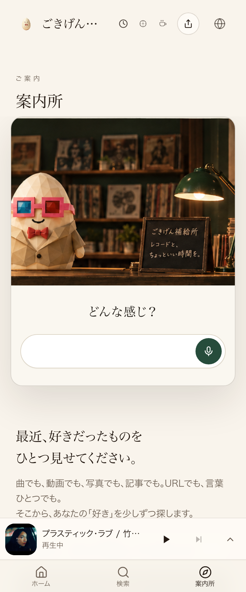

共有資料の一覧 ／ 確認ページ #34409 34409番：pick曲note16件の反映状況
#34409 34409番：pick曲note16件の反映状況
2026-10-04 実装・main合流・本番(GitHub Pages)反映まで実測確認
918番で裏取りした16曲（椎名林檎Marunouchi Sadistic等）のnoteはmainへcommit済み。本番(Lovable)への反映を実測したところ、まだ届いていなかった。合わせて、本番/cover-guideで押せる要素を実際に全部クリックする検品を実行し、既知のサイト全体バグ(34397番・hydrationエラー)がこのページでも再現することを確認した。
② 数字
0/16本番に反映済みのnote数(実測:coverguide-data-DlOST_hO.jsに新note文字列0件検出)
3件本番/cover-guideで検出したコンソールエラー数(実測:verify_click.mjs実行結果)
0件クリックしても無反応だったボタン数(実測:28件中28件クリック成功・無反応ゼロ)
③ 実データでのスクリーンショット
クリック検品 28件クリック後
④ 押せるリンク